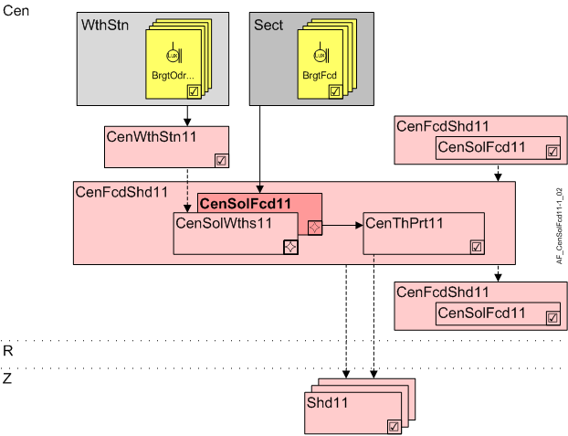

Central solar radiation on facade (CenSolFcd11)
Overview
The application function "Central solar radiation on facade 11" (CenSolFcd11) measures solar radiation directly on the facade.

Cen | Central functions |
WthStn | Weather station |
GlbSolRdn | Global solar radiation |
Sect | Facade sector |
SolRdnFcd | Solar radiation in the facade sector |
CenWthStn11 | Central weather station 11, measurements for outside air temperature, brightness, solar radiation, wind speed, precipitation |
CenFcdShd11 | Central facade shading for automatic 11 |
CenSolWths11 | Central solar radiation from weather station 11 |
CenSolFcd11 | Central solar radiation on facade 11 |
CenThPrt | Central thermal protection 11 |
R | Room |
Z | Shading zone in room segment |
Shd11 | Shading 11, for shading and daylight use with venetian blinds or awnings, group member in a facade sector |
Function
A sensor on the facade measures solar radiation.
Configuration
None.
Interface
Interface | Description | Type | Ref. | Owner |
|---|---|---|---|---|
SolRdnFcd | Solar radiation on facade | AI | ◉ | Central function / Device |
Engineering and commissioning
The sensor should have the same solar radiation conditions as a window in the facade section, i.e. installed on the facade. Use AF CenBrgtWths11 if the sensor is subject to other radiation conditions, e.g. installed on the roof.
Hierarchical grouping
Within CenFcd11, a nested AF CenSolWths11 is required for CenThPrt11.
It distributes its data to subordinate central AFs or directly to the connected room segments.